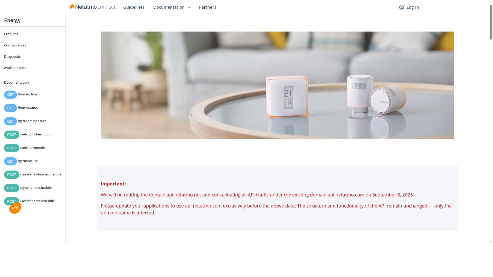

from fasthtml.jupyter import *
from fastcore.utils import *
import fastcore.all as fc, matplotlib.pyplot as plt, collections
from fastcore.xtras import dict2obj
from httpx import get as xget, post as xpost
from fasthtml.common import *
from monsterui.core import *
from dotenv import load_dotenv
from base64 import b64decode
from ipykernel_helper import get_md
from IPython.display import Image, displaynetatmo-energy
load_dotenv()TrueHi solveit! I am Pol, and I am working with you today! I’m an experienced Python coder and I enjoy learning new things. When writing code for me, please follow fast.ai coding style: avoid comments; place single line if/loop/etc constructs on the same line; use concise variable names where appropriate. Follow the style you will see in my messages, as we work on this dialogue together. Are you ready?
🤖Reply🤖
Hi Pol! Yes, I’m absolutely ready to work with you! I’m familiar with the fast.ai coding style and will follow your preferences for concise, clear code without unnecessary comments. I see you’ve already set up some useful imports including fastcore, which I know is central to the fast.ai approach.
The goal of this notebook is to set up communication with my home thermostat from the Netatmo brand. I have already created an app on their website to get API access.
The documentation is here: https://dev.netatmo.com/apidocumentation/general
The documentation pages are rendered using JS so let’s first set up Zyte so we can render those pages and access the proper docs.
Zyte API
def fetch_page(
url:str, # URL to fetch,
browser_html:bool=True, # Use a browser to reunder js page?
as_md:bool=False, # Convert HTML to markdown?
screenshot:bool=False, # Also return a screenshot?
timeout:int=15, # fetch timeout in seconds
):
"Fetch a page"
api_key=os.getenv('ZYTE_API_KEY')
r = xpost("https://api.zyte.com/v1/extract", auth=(api_key, ""), json=dict(url=url, browserHtml=browser_html, screenshot=screenshot), timeout=timeout)
r.raise_for_status()
rj = r.json()
if rj['statusCode'] != 200: raise Exception(f"Status {rj['statusCode']} for {url}")
html = get_md(rj['browserHtml']) if as_md else rj['browserHtml']
img = Image(data=b64decode(rj['screenshot'])) if screenshot and 'screenshot' in rj else None
return (html, img) if screenshot else htmlhtml, img = fetch_page('https://dev.netatmo.com/apidocumentation/energy', screenshot=True)html[:500]'<!DOCTYPE html><html><head>\n <meta data-n-head="ssr" charset="utf-8"><meta data-n-head="ssr" name="viewport" content="width=device-width, initial-scale=1"><meta data-n-head="ssr" data-hid="description" name="description" content="We want to create a smarter home. With Netatmo connect, creative people can imagine solutions to make users\' life easier.\n Netatmo products are ready to communicate with all Apps and services to fit your vision of what makes a home smarter."><meta data'img
Thermostat Class
Energy API endpoints for Netatmo thermostat:
| Method | Endpoint | Description |
|---|---|---|
| GET | /homesdata |
Retrieve user’s homes and topology |
| GET | /homestatus |
Get current status of home and devices |
| GET | /getroommeasure |
Retrieve room data history (for graphs) |
| POST | /setroomthermpoint |
Control heating of a room |
| POST | /setthermmode |
Control home heating system |
| GET | /getmeasure |
Retrieve boiler historical data |
| POST | /createnewhomeschedule |
Create thermostat weekly schedule |
| POST | /synchomeschedule |
Modify thermostat weekly schedule |
| POST | /switchhomeschedule |
Apply a specific schedule |
Base domain is api.netatmo.com (they’re retiring api.netatmo.net on Sept 8, 2025).
Thermostat
Thermostat (client_id=None, client_secret=None, access_token=None, refresh_token=None)
Initialize self. See help(type(self)) for accurate signature.
t = Thermostat()
t.client_id[:10] # quick check'6952046932'r = t._refresh()
list(r)['access_token', 'refresh_token', 'expires_in', 'expire_in', 'scope']from dialoghelper.core import *
# tool_info()Tools available from dialoghelper: &[curr_dialog, msg_idx, add_html, find_msg_id, find_msgs, read_msg, del_msg, add_msg, update_msg, msg_insert_line, msg_str_replace, msg_strs_replace, msg_replace_lines]
Homes data
Thermostat.homesdata
Thermostat.homesdata ()
r = t.homesdata()
home_id = r.homes[0].id
home_id'693572355b98bfc2a009b174'r.homes[0].schedules(#1) [{'timetable': [{'zone_id': 1, 'm_offset': 0}, {'zone_id': 0, 'm_offset': 480}, {'zone_id': 1, 'm_offset': 1440}, {'zone_id': 0, 'm_offset': 1920}, {'zone_id': 1, 'm_offset': 2880}, {'zone_id': 0, 'm_offset': 3360}, {'zone_id': 1, 'm_offset': 4320}, {'zone_id': 0, 'm_offset': 4800}, {'zone_id': 1, 'm_offset': 5760}, {'zone_id': 0, 'm_offset': 6240}, {'zone_id': 1, 'm_offset': 7200}, {'zone_id': 0, 'm_offset': 7740}, {'zone_id': 1, 'm_offset': 8640}, {'zone_id': 0, 'm_offset': 9180}], 'zones': [{'name': 'Night', 'id': 1, 'type': 1, 'rooms_temp': [{'room_id': '3352988001', 'temp': 21}], 'modules': [], 'rooms': [{'id': '3352988001', 'therm_setpoint_temperature': 21}]}, {'name': 'Comfort', 'id': 0, 'type': 0, 'rooms_temp': [{'room_id': '3352988001', 'temp': 21}], 'modules': [], 'rooms': [{'id': '3352988001', 'therm_setpoint_temperature': 21}]}, {'name': 'Comfort +', 'id': 3, 'type': 8, 'rooms_temp': [{'room_id': '3352988001', 'temp': 22}], 'modules': [], 'rooms': [{'id': '3352988001', 'therm_setpoint_temperature': 22}]}, {'name': 'Eco', 'id': 4, 'type': 5, 'rooms_temp': [{'room_id': '3352988001', 'temp': 19}], 'modules': [], 'rooms': [{'id': '3352988001', 'therm_setpoint_temperature': 19}]}], 'name': 'Temperature schedule', 'default': False, 'away_temp': 17, 'hg_temp': 7, 'id': '693572355b98bfc2a009b175', 'type': 'therm', 'selected': True}]We can see one schedule called “Temperature schedule” with:
Zones (temperature presets): - Night (id 1): 21°C - Comfort (id 0): 21°C
- Comfort + (id 3): 22°C - Eco (id 4): 19°C
Timetable - m_offset is minutes from Monday 00:00: - 0 = Mon 00:00 → zone 1 (Night) - 480 = Mon 08:00 → zone 0 (Comfort) - 1440 = Tue 00:00 → zone 1 (Night) - etc.
Special temps: - away_temp: 17°C - hg_temp: 7°C (frost guard)
So it switches between Night and Comfort zones each day at midnight and 8am
Home status
Thermostat.homestatus
Thermostat.homestatus (home_id)
st = t.homestatus(home_id=home_id)
room = st.home.rooms[0]
room{ 'anticipating': False,
'heating_power_request': 0,
'id': '3352988001',
'open_window': False,
'reachable': True,
'therm_measured_temperature': 18.6,
'therm_setpoint_mode': 'off',
'therm_setpoint_start_time': 1767067816,
'therm_setpoint_temperature': 0}let’s do them all in order, first only getroommeasuer
Get room measure
Thermostat.getroommeasure
Thermostat.getroommeasure (home_id:str, room_id:str, scale:str='1hour', type:str='temperature', begin:int=None, end:int=None)
Retrieve room temperature history
| Type | Default | Details | |
|---|---|---|---|
| home_id | str | Home ID | |
| room_id | str | Room ID | |
| scale | str | 1hour | Time scale: 30min, 1hour, 3hours, 1day, 1week, 1month |
| type | str | temperature | Data type: temperature or sp_temperature |
| begin | int | None | Start timestamp |
| end | int | None | End timestamp |
r = t.getroommeasure(home_id, room.id)
list(r)[{'beg_time': 1765110600,
'step_time': 3600,
'value': (#544) [[22.2],[22.2],[22.1],[22],[22.1],[22.3],[22.9],[22.7],[22.3],[22],[22],[21.9],[21.3],[21.1],[21],[21],[21],[21.1],[21.3],[21.7]...]}]let’s do a super minimal plot of the data

Set room therm point
Thermostat.room_temperatures
Thermostat.room_temperatures (home_id:str)
Nicer way to get a list of the temperatures of all room in the home
Thermostat.setroomthermpoint
Thermostat.setroomthermpoint (home_id:str, room_id:str, mode:str, temp:float=None, endtime:int=None)
Set room temperature setpoint
| Type | Default | Details | |
|---|---|---|---|
| home_id | str | Home ID | |
| room_id | str | Room ID | |
| mode | str | Mode: manual, home, or schedule | |
| temp | float | None | Target temperature (for manual mode) |
| endtime | int | None | End timestamp (for manual mode) |
# let's check the thermp point before setting it
t.room_temperatures(home_id)[{'room_id': '3352988001',
'temperature': 18.6,
'setpoint': 0,
'setpoint_mode': 'off'}]# Example: set room to 20°C for 1 hour
t.setroomthermpoint(home_id, room.id, mode='manual', temp=20, endtime=int(time())+3600){'status': 'ok', 'time_server': 1767067846}t.room_temperatures(home_id)[{'room_id': '3352988001',
'temperature': 18.6,
'setpoint': 20,
'setpoint_mode': 'manual'}]We can see the thermostat was turned on, let’s turn it off again below
t.setroomthermpoint(home_id, room.id, mode='off'){'status': 'ok', 'time_server': 1767067847}t.room_temperatures(home_id)[{'room_id': '3352988001',
'temperature': 18.6,
'setpoint': 0,
'setpoint_mode': 'off'}]amazing! let’s do another method
Set therm mode
Thermostat.setthermmode
Thermostat.setthermmode (home_id:str, mode:str, endtime:int=None)
Set home thermostat mode
| Type | Default | Details | |
|---|---|---|---|
| home_id | str | Home ID | |
| mode | str | Mode: schedule (weekly program), away (reduced temp), hg (frost guard ~7°C) | |
| endtime | int | None | End timestamp (for away/hg modes) |
I think it would be good to document a bit more the schedule modes, should we add the info after the markdown header? or in the method docstring or docments? wdyt?
Get measure
Thermostat.getmeasure
Thermostat.getmeasure (device_id:str, module_id:str=None, scale:str='1hour', type:str='boileron', begin:int=None, end:int=None)
Retrieve boiler historical data
| Type | Default | Details | |
|---|---|---|---|
| device_id | str | Device MAC address | |
| module_id | str | None | Module MAC (if reading from a module) |
| scale | str | 1hour | Time scale: 30min, 1hour, 3hours, 1day, 1week, 1month |
| type | str | boileron | Data type: boileron, boileroff, sum_boiler_on, sum_boiler_off |
| begin | int | None | Start timestamp |
| end | int | None | End timestamp |
# Get device_id from homesdata
r = t.homesdata()
device_id = r.homes[0].modules[0].id
m = t.getmeasure(device_id)
list(m)[{'beg_time': 1765110600,
'step_time': 3600,
'value': (#544) [[None],[None],[None],[None],[None],[None],[None],[None],[None],[None],[None],[None],[None],[None],[None],[None],[None],[None],[None],[None]...]}]I don’t have a boiler device so the data is None
I assumed it’s none because I have no boiler, but then I actually have a device_id, what’s that?
Create new home schedule
Thermostat.createnewhomeschedule
Thermostat.createnewhomeschedule (home_id:str, name:str, zones:list, timetable:list, hg_temp:float=7, away_temp:float=17)
Create a new weekly schedule
| Type | Default | Details | |
|---|---|---|---|
| home_id | str | Home ID | |
| name | str | New schedule name | |
| zones | list | List of zone dicts with id, name, type, rooms_temp | |
| timetable | list | List of timetable entries with zone_id, m_offset | |
| hg_temp | float | 7 | Frost guard temp |
| away_temp | float | 17 | Away mode temp |
Switch home schedule
Thermostat.switchhomeschedule
Thermostat.switchhomeschedule (home_id:str, schedule_id:str)
Switch to a specific weekly schedule
| Type | Details | |
|---|---|---|
| home_id | str | Home ID |
| schedule_id | str | Schedule ID to activate |
Sync home schedule
Thermostat.synchomeschedule
Thermostat.synchomeschedule (home_id:str, schedule_id:str, zones:list, timetable:list, name:str=None, hg_temp:float=None, away_temp:float=None)
Modify an existing weekly schedule
| Type | Default | Details | |
|---|---|---|---|
| home_id | str | Home ID | |
| schedule_id | str | Schedule ID to modify | |
| zones | list | List of zone dicts with id, name, type, rooms_temp | |
| timetable | list | List of timetable entries with zone_id, m_offset | |
| name | str | None | Schedule name |
| hg_temp | float | None | Frost guard temp |
| away_temp | float | None | Away mode temp |
Publishing the package to pypi
is our SDK only for thermostats? I’m planning to make it publicly available and I’m wondering what the github repo name and description should be to make it easily discoverable
UI
Amazing! now let’s do a very basic FastHTML app that displays a beautiful historical plot of temperature vs. setpoint. Maybe we can start with the FastHTML component.